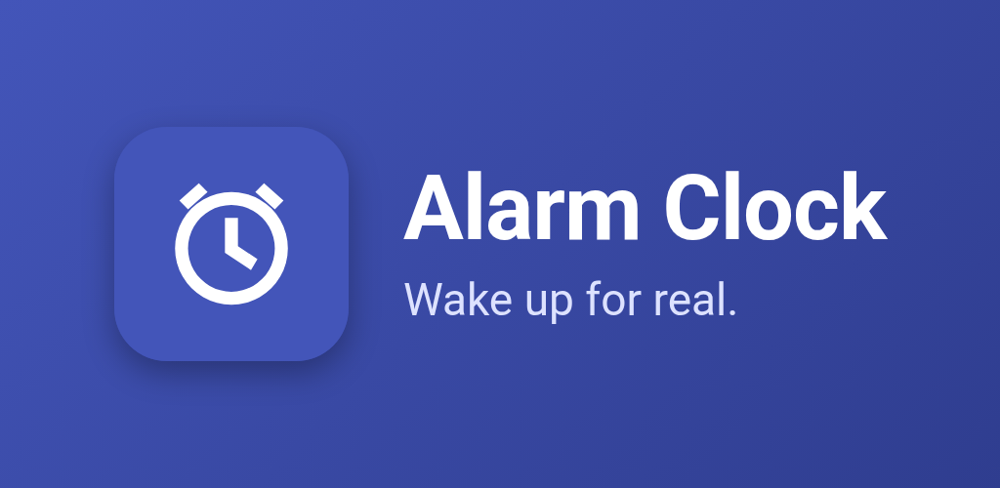
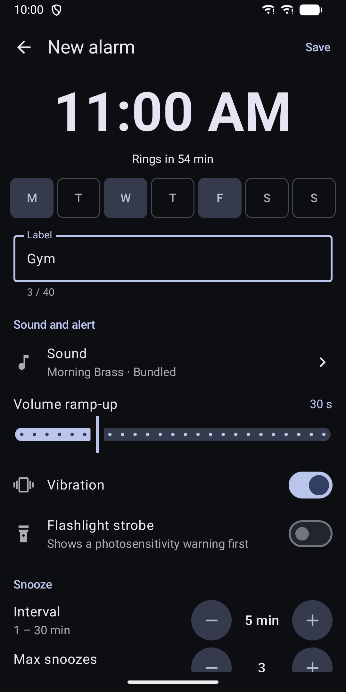
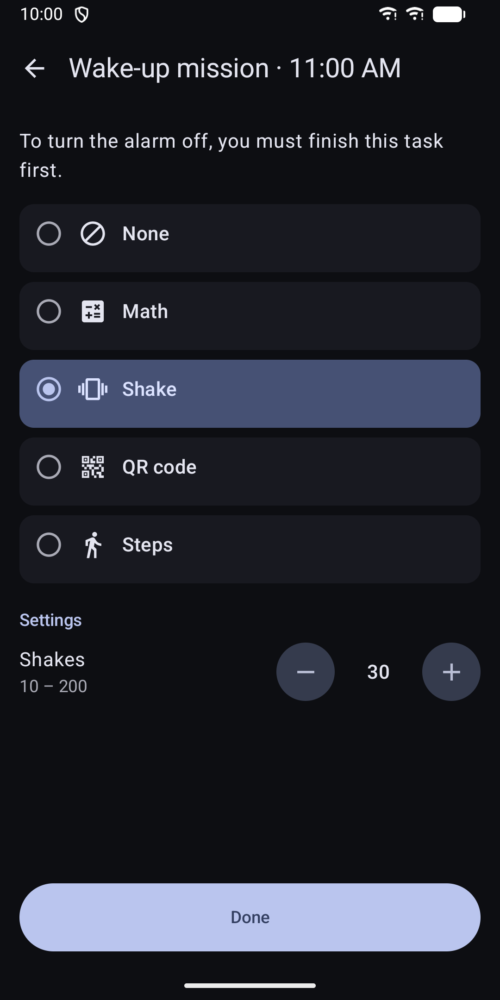

Alarm Clock: Wake-Up Missions
Reliable alarms for heavy sleepers. Solve a task to switch the alarm off.






About
Alarm Clock is made for people who sleep through normal alarms. It rings on the minute, gets louder step by step, and asks you to finish a short task before it lets you turn it off. ALARMS - Set as many alarms as you like, once or on chosen weekdays - Add a label to each alarm - Skip only the next ring of a repeating alarm - Alarms are set again after a reboot and after a time or time zone change - The alarm uses the alarm volume, so it also rings when the phone is on silent WAKE-UP MISSIONS Pick one mission per alarm. You cannot skip it. - Math: three difficulty levels, and you choose how many problems - Shake: shake the phone as many times as you set - QR code or barcode: scan a code you stuck somewhere you have to walk to, such as the bathroom - Steps: walk the number of steps you set If a mission fails three times, the app offers an easier math problem so you are never stuck. If you leave the mission, the alarm rings again after one minute. SNOOZE Snooze is always available on the ringing screen. Set the interval from 1 to 30 minutes and the maximum number of snoozes from 0 to 10, or unlimited. Once a mission has started, snoozing is no longer possible. SOUND AND ALERTS - Bundled tones, system ringtones, or your own audio file - If your file is moved or deleted, a bundled tone rings instead, never silence - Volume ramps up over a time you choose - Vibration on or off for each alarm - Optional flashlight strobe, off by default, with a photosensitivity warning before you can turn it on RELIABILITY Phones often stop apps to save battery. A setup guide walks you through the exact alarm, notification, full-screen and battery settings. It includes guides for Xiaomi, Samsung, Huawei, OnePlus, Oppo, Vivo and Realme, and a self-test alarm that rings one minute later. EXTRAS - Widget that shows your next alarm with a countdown - Light and dark theme that follow your system - Works on phones and tablets - Labels for screen readers and large touch targets - English and German PRIVACY The app has no internet permission, no account and no analytics. Your alarms stay on your phone. Camera access is used only to scan a QR code for the QR mission. Activity recognition is used only to count steps for the steps mission. Both are requested only when you need them. All features are available in the app. It has no in-app purchases. OPEN SOURCE Alarm Clock is open source under the GNU GPL v3 or later. Questions or feedback: apps@schimpf.es